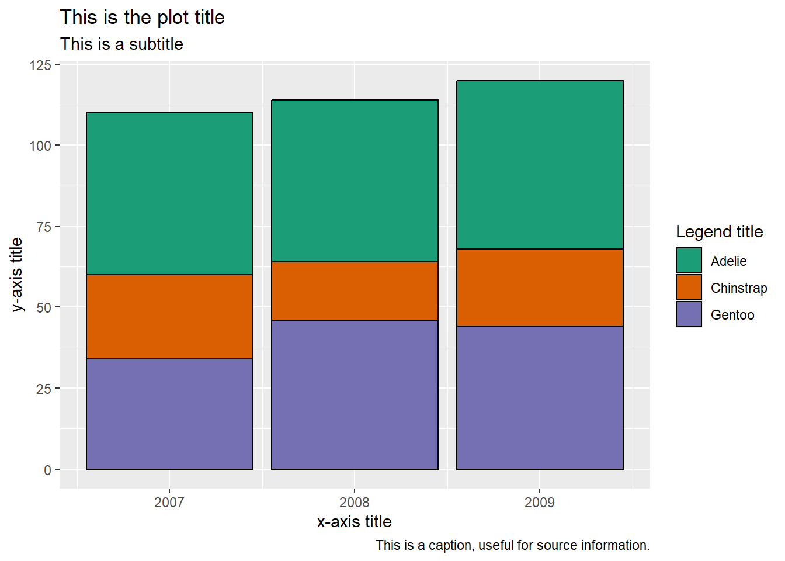
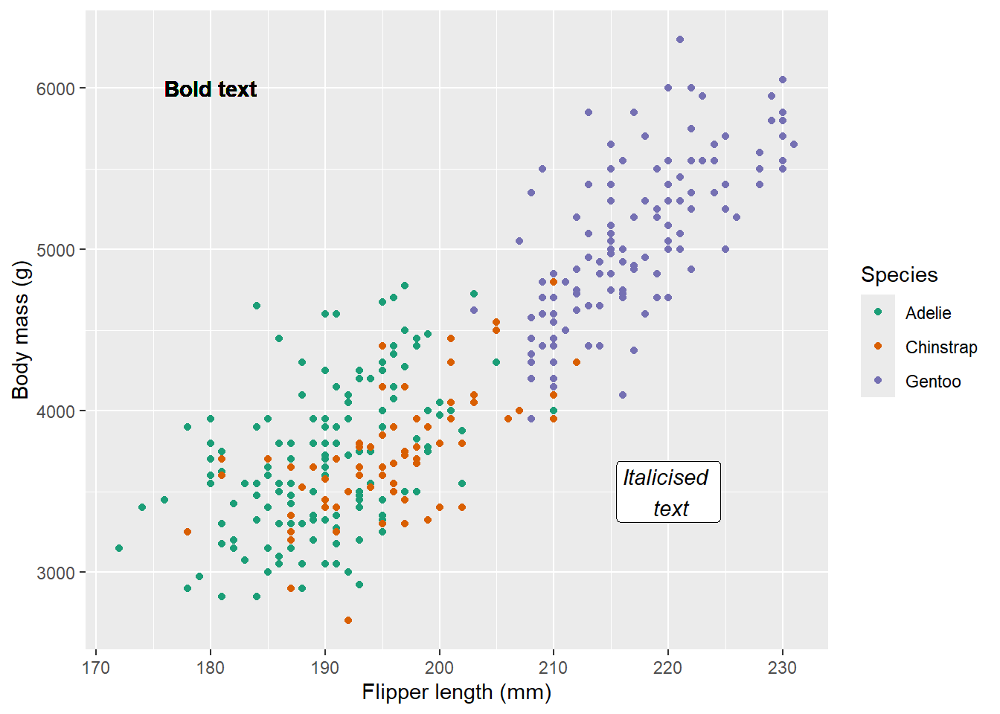
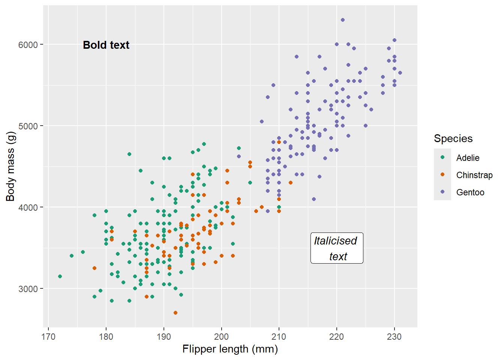
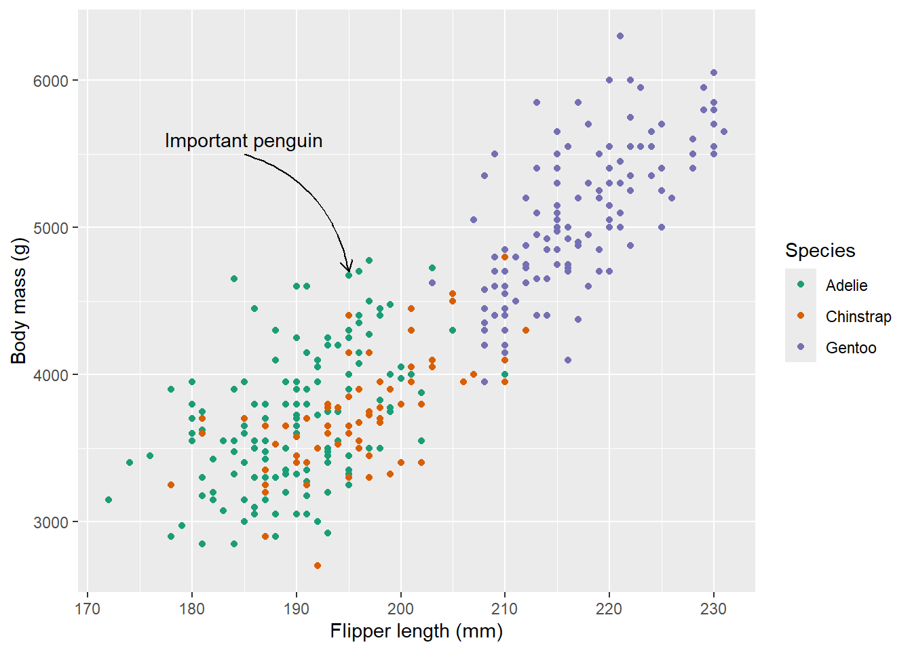

Besides the layers required to generate a visualisation, additional layers can be added enhance the messages given by the data, drawing readers’ attention to interesting findings and the story you are trying to tell.
4.1 Plot and axis titles
In the previous section, we saw how axis and legend titles can be added within scale functions using the name argument. ggplot2 also contains the labs function which can be added as a separate layer to control these titles and can also add plot titles, subtitles and footnotes:
ggplot(data = penguins, aes(x = year, fill = species)) +geom_bar(colour ="black") +scale_fill_brewer(palette ="Dark2") +labs(title ="This is the plot title",subtitle ="This is a subtitle",caption ="This is a caption, useful for source information.",x ="x-axis title", y ="y-axis title", fill ="Legend title")

Style tip
Mathematical equations can be added into labs arguments by surrounding the text with the quote() function. Check ?plotmath for examples of equation syntax.
\n can be used to specify line breaks within the labs arguments.
Specifying any of these arguments as NULL (no speech marks) removes the title from the visualisation.
4.2 Annotations
Annotations can be useful to include context to visualisations and draw attention to important messages. Annotations can include text labels, reference lines and shading, amongst others. ggplot2 contains a number of geom objects that can be used to add annotation layers to a visualisation. As these annotations are added within geoms, they can be specified using values from the data (when wrapped in the aes function) or manually. This section will cover some common annotations but there are many others available (see the ggplot ebook for a more comprehensive list).
4.2.1 Text labels
Text labels can either be added using geom_text or geom_label (which adds text surrounded by a rectangular box, making it easier to read on busy backgrounds). Aesthetics such as x, y and colour can be used to customise text labels (either manually or from the data). Other aesthetics that can be added include:
label defines the text displayed
angle rotates the text
family defines the font
fontface can be changed to make text "bold" or "italic"
ggplot(data = penguins,aes(x = flipper_length_mm, y = body_mass_g, colour = species)) +geom_point() +scale_colour_brewer(palette ="Dark2") +labs(x ="Flipper length (mm)", y ="Body mass (g)",colour ="Species") +geom_text(label ="Bold text", y =6000, x =180, fontface ="bold",colour ="black") +geom_label(label ="Italicised \n text", y =3500, x =220, fontface ="italic", colour ="black")

Figure 4.1: Scatterplot showing the size and mass of penguin species in the Palmer Archipelago, Antarctica.
Warning
As the aes wrapper has been specified at the ggplot layer, this will be applied to all geoms, including out text and labels. To overwrite this, we can specify the colour manually.
Hint
Where text and label positions are determined by data, you may also wish to utilise the nudge_x and nudge_y arguments to shift annotations and avoid overlap.
Adding text through geoms will work but notice that the annotations looks a little blurry on the text. This is because geom layers take the data into account and assume that you want the same number of layers/markings as observations in the data. This means that rather than adding a single text or label, ggplot is actually adding 342. To overcome this, we can use the annotate function instead.
4.2.2 Annotate function
The annotate function will add single geom layers to a visualisation while disregarding the rest of the data. This is useful when adding annotations such as text, labels, shapes or arrows. annotate functions require the same arguments as the corresponding geom, with an additional argument that specifies the geom we require.
For example, we can adapt the code used to create Figure 4.1 to utilise the annotate functions instead:
ggplot(data = penguins,aes(x = flipper_length_mm, y = body_mass_g, colour = species)) +geom_point() +scale_colour_brewer(palette ="Dark2") +labs(x ="Flipper length (mm)", y ="Body mass (g)",colour ="Species") +annotate("text", label ="Bold text", y =6000, x =180, fontface ="bold") +annotate("label", label ="Italicised \n text", y =3500, x =220, fontface ="italic")
1
The annotate functions no longer require colour to be specified (unless we want to change it) as it is not generated using the data.

Figure 4.2: Scatterplot showing the size and mass of penguin species in the Palmer Archipelago, Antarctica.
Text labels can be combined with curves and arrows to make them clearer, using the curve or segmentgeoms. Both contain the optional argument arrow which adds an arrow to the curved line (this must be defined within the arrow function, which can be used to adjust the size or shape of the arrow):
ggplot(data = penguins,aes(x = flipper_length_mm, y = body_mass_g, colour = species)) +geom_point() +scale_colour_brewer(palette ="Dark2") +labs(x ="Flipper length (mm)", y ="Body mass (g)",colour ="Species") +annotate("curve", x =185, y =5500, xend =195, yend =4700, curvature =-.3, arrow =arrow(length =unit(.25, "cm"))) +annotate("text", x =185, y =5600, label ="Important penguin")

Figure 4.3: Scatterplot showing the size and mass of penguin species in the Palmer Archipelago, Antarctica.
Exercise 3
Using the csp_2020 dataset, investigate the relationship between sfa_2020 and ct_total_2020, and show whether that differs between regions. Ensure that this visualisation:
Has appropriate axes, legend and plot titles
Has annotations that explain interesting points and make these relationships clearer to a reader
Exercise hint
Include region in the aes wrapper. Consider adding a line of best fit per region to make these relationships clearer.
This dataset has a clear outlier. Highlight this for readers.
Your ggplot should contain annotate and labs layers.
Generate an alternative visualisation that investigates the relationship between sfa_2020 and ct_total_2020, adding an annotation to highlight just the North West region (region == "NW"). Add a label to the graph area that makes it clear what the highlighted points represent (rather than a legend).
Exercise hint
Add an extra geom_point layer to highlight the North West region.
Use annotate layers to define the highlighted point meaning in the graph area. If you are really stuck, check this ebook for inspiration.